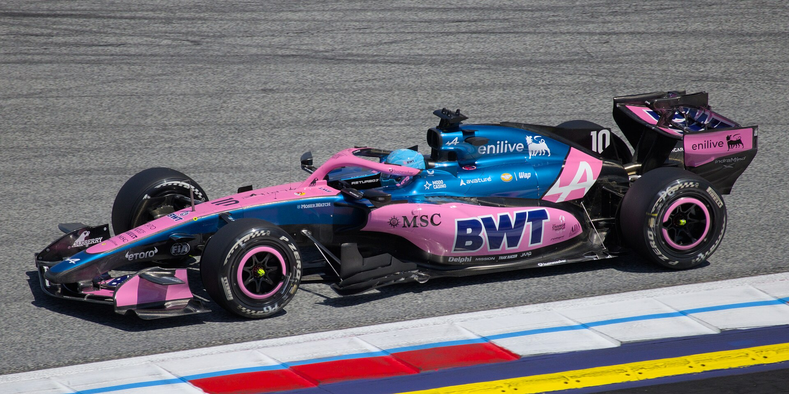
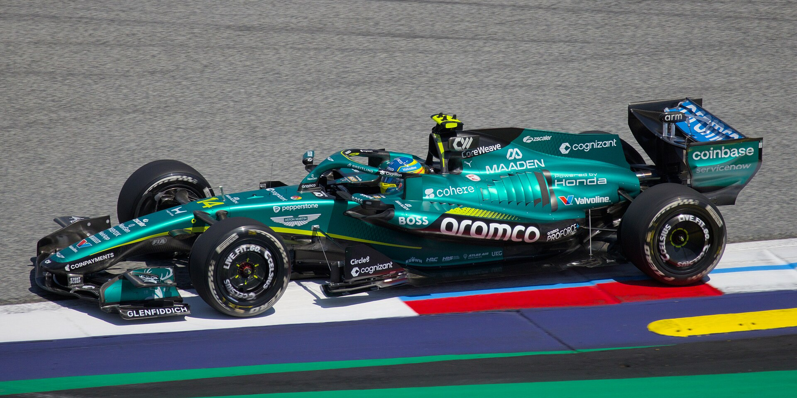
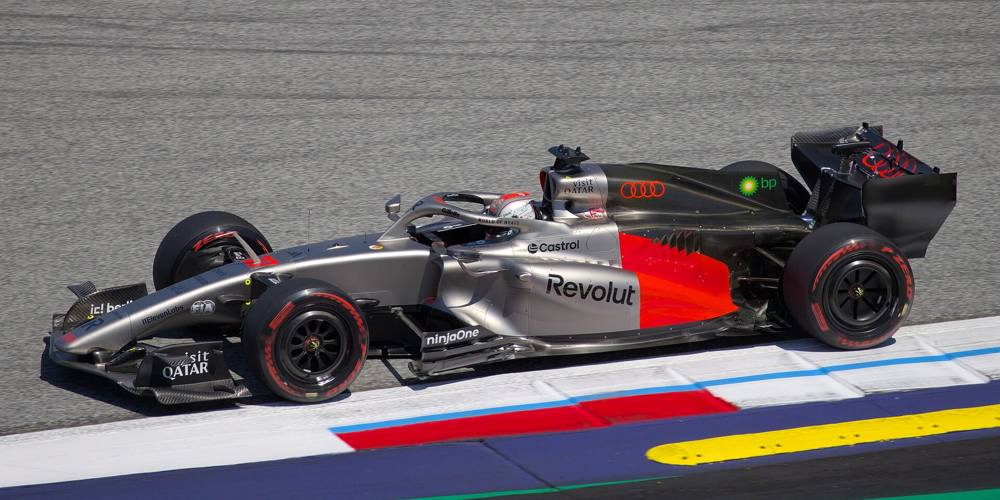
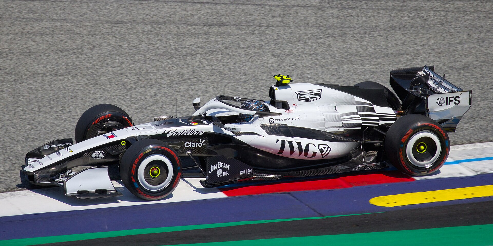
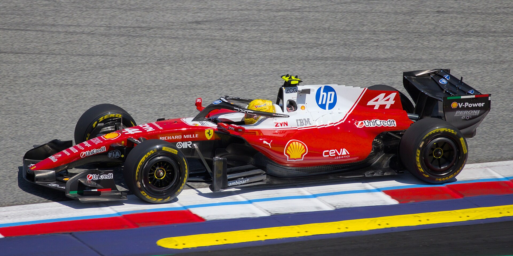
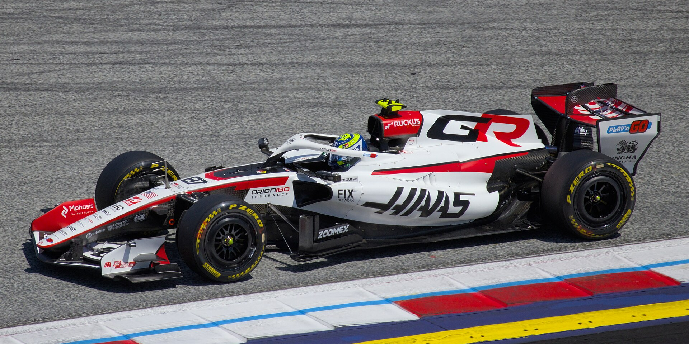
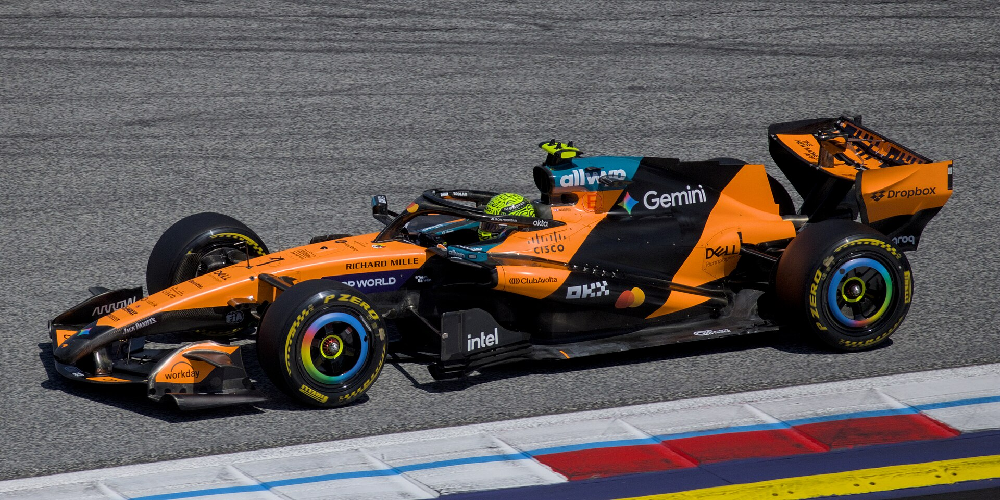
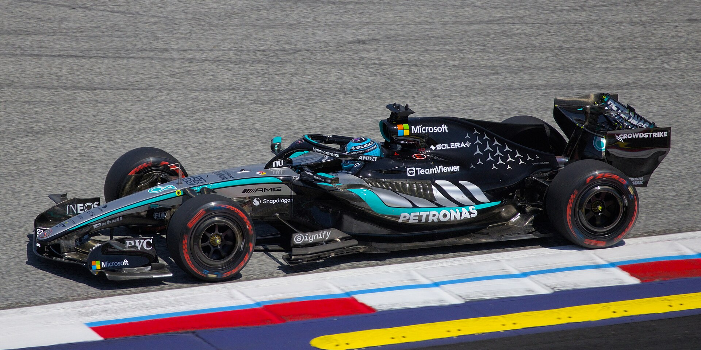
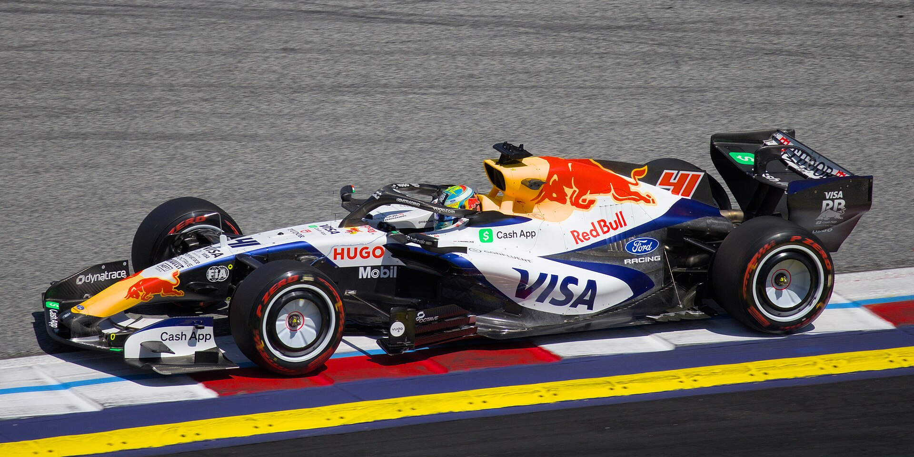
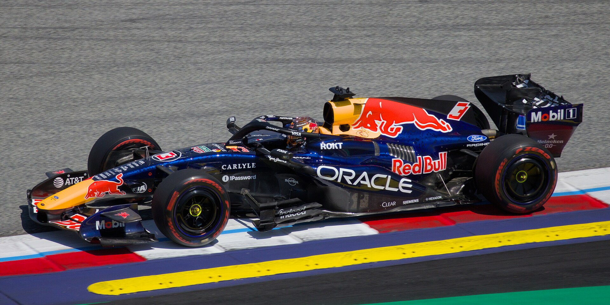

"The grid" means two things: the starting lineup on race day, and the whole set of teams and drivers in the sport. This page is the second meaning. The 2026 rules reset means last year's order is not a safe guide, which makes this a good year to pick a team. Each card shows the team's base, its engine supplier, both drivers with their car numbers, and a short history. The cards are in alphabetical order, not championship order.
Alpine
Enstone, England · Power unit: Mercedes

- #10 Pierre Gasly
- #43 Franco Colapinto
Renault's factory team races under its Alpine sports-car brand. 2026 is its first season as a Mercedes engine customer after Renault shut down its own Formula 1 engine program. Gasly, a Grand Prix winner (Italy, 2020), leads the team; Colapinto, from Argentina, is in his first full season.
Aston Martin
Silverstone, England · Power unit: Honda

- #14 Fernando Alonso
- #18 Lance Stroll
Owned by Canadian billionaire Lawrence Stroll and starting a new works partnership with Honda. Alonso is a two-time World Champion (2005 and 2006) and, at 45, the oldest driver on the grid. The 2026 car is the first shaped by Adrian Newey, the most successful designer in the sport's history.
Audi
Hinwil, Switzerland · Power unit: Audi

- #27 Nico Hülkenberg
- #5 Gabriel Bortoleto
Audi bought the Sauber team and enters 2026 as a full works team, building both the car and the engine. Hülkenberg, a veteran of more than 200 Grands Prix, took his first career podium at Silverstone in 2025. Bortoleto, the 2024 Formula 2 champion from Brazil, is in his second season.
Cadillac
Silverstone, England and Fishers, Indiana · Power unit: Ferrari

- #77 Valtteri Bottas
- #11 Sergio Pérez
The new eleventh team, backed by General Motors, and the first new entry since Haas in 2016. Cadillac runs Ferrari engines through 2028 while GM builds its own. Bottas (ten Grand Prix wins) and Pérez (six wins) bring more than 500 combined starts to a team with zero.
Ferrari
Maranello, Italy · Power unit: Ferrari

- #16 Charles Leclerc
- #44 Lewis Hamilton
The only team that has competed in every season since 1950 and the most successful in history, with 16 Constructors' Championships. Hamilton, a seven-time World Champion, is in his second year at Ferrari. Leclerc, from Monaco, has been with the team since 2019 and is the fan favorite at Monza.
Haas
Kannapolis, North Carolina and Banbury, England · Power unit: Ferrari

- #31 Esteban Ocon
- #87 Oliver Bearman
The American team, owned by machine-tool businessman Gene Haas, has raced since 2016 with Ferrari engines. Ocon is a Grand Prix winner (Hungary, 2021). Bearman, a British Ferrari junior, is in his second full season after a headline-making debut as a stand-in for Ferrari in 2024.
McLaren
Woking, England · Power unit: Mercedes

- #1 Lando Norris
- #81 Oscar Piastri
The reigning champions on both counts. McLaren won the Constructors' Championship in 2024 and 2025, and Norris won the 2025 Drivers' title, so he carries the number 1 this year. Piastri, from Australia, was a title contender for most of 2025. McLaren has raced since 1966.
Mercedes
Brackley, England · Power unit: Mercedes

- #63 George Russell
- #12 Kimi Antonelli
The team that won eight straight Constructors' Championships from 2014 to 2021 and supplies engines to four of the eleven teams. Russell, a multiple Grand Prix winner, is the team leader. Antonelli, from Italy, was signed straight out of Formula 2 at 18 to replace Hamilton.
Racing Bulls
Faenza, Italy · Power unit: Red Bull Ford Powertrains

- #30 Liam Lawson
- #41 Arvid Lindblad
Red Bull's second team, formerly Toro Rosso and AlphaTauri, is where the Red Bull driver academy proves its graduates. Lawson, from New Zealand, is in his second full season. Lindblad, a British 19-year-old, is the only rookie on the 2026 grid.
Red Bull
Milton Keynes, England · Power unit: Red Bull Ford Powertrains

- #3 Max Verstappen
- #6 Isack Hadjar
Verstappen won four straight World Championships from 2021 to 2024 and switched from his long-time 33 to the number 3 for 2026. This is the first season Red Bull races its own engine, built in-house with Ford. Hadjar, a French second-year driver, was promoted from Racing Bulls.
Williams
Grove, England · Power unit: Mercedes
- #23 Alex Albon
- #55 Carlos Sainz
A family-founded team turned modern rebuild: Williams won nine Constructors' Championships between 1980 and 1997 and is climbing back under team principal James Vowles. Sainz, a four-time Grand Prix winner, and Albon, in his fifth season with the team, give Williams one of the most experienced pairings on the grid.